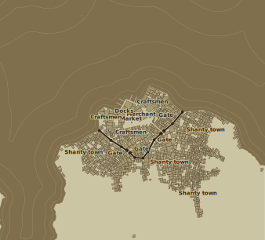

Sleepy town at southern end of Bay of Kings, most commonly used as shipping port of nearby Four Finger Crossing.
Size: Small town
Connects to: Redriver Inn, Four Finger Crossing

Single storey stone-walled building, with a yellow tile roof and unusually high ceilings. A collection of tankards from many lands sits upon a shelf. Accomodations consist of several large rooms with beds and straw mattresses and a mezzanine with several wooden cots.
In a market ward, surrounded by crowded avenues and colorful marketplaces. The street outside is filled with the scent of damp earth.
The innkeeper is a stout female halfling named Philia Beney. She knows a few simple spells for housekeeping.
Modest wooden building, with a reinforced wooden door. Accommodations consist of several wooden cots in the cellar and straw mats near the hearth.
On Grove Side, in an adventurers district of noisy inns and wandering bards. The street outside is crowded with a procession of beggars.
The innkeeper is a flamboyant male human named Wine. He is a retired thief, and is rumored to have a hidden cache of stolen treasure.
A band of slave-trading ogres lurks in the ruins of Kada’s Delve.
Reward: 1000g
- Bali, Guild of Green Merchants
A vast swarm of spiders has been gathering in the Bergor’s Vale.
Reward: 500g
- Rithuia, local druid
A gang of thieves and murderers lurks in the sewers and tunnels beneath the town.
Reward: 1500g
- Vyncent, head of town watch